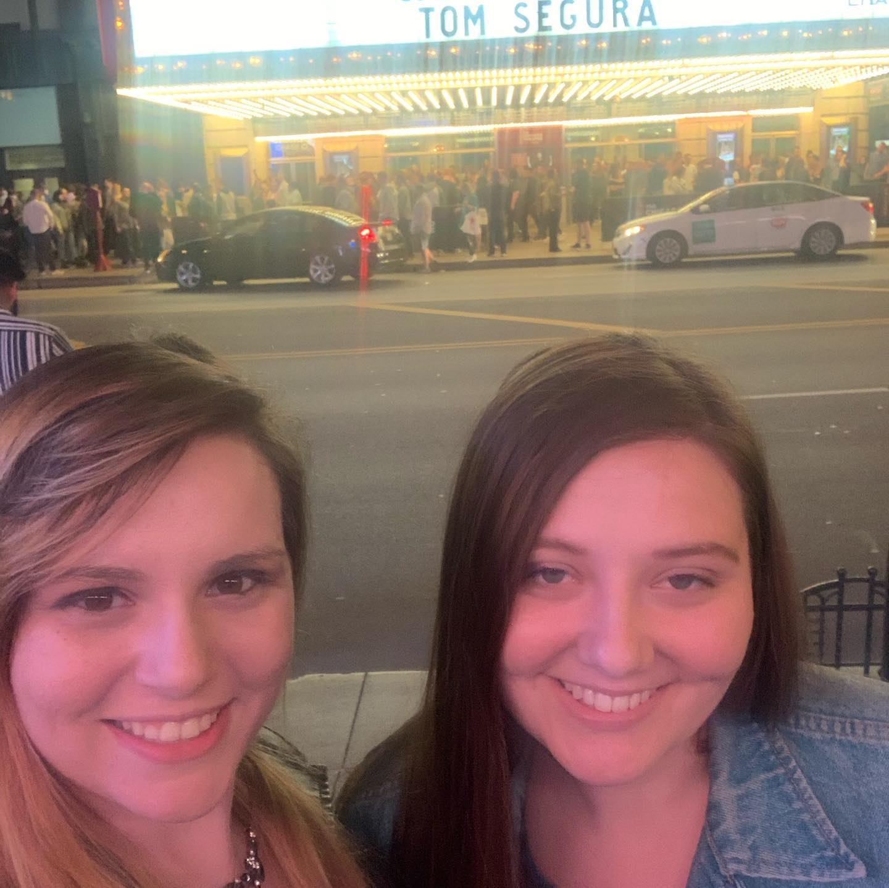

I highly enjoy comedy shows and anything that is humerous. I love to go to comedy clubs and specials. One of my absolute favorite shows I have been to is Tom Segura. I went with my best friend with last minute tickets and it was a blast!
Music is very important to me. It is how I am able to excape from reality. Music has always been something I turn to when I need to think or when I just want to feel good. I also love using it as background noise. Most of the time I don't even notice it, but I always notice when it is not on.